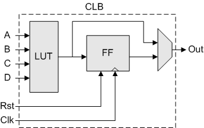
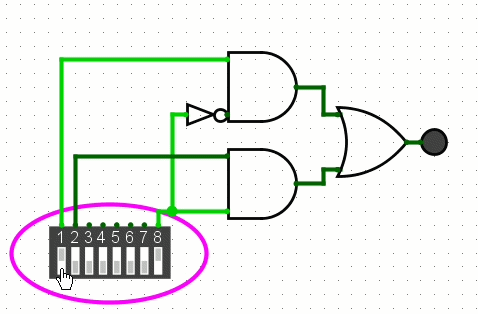

What's Underneath an FPGA chip?
Part of project: RISC-V Processor
Before we move on, I've found a BPS space style channel called Breaking Taps. This guy manufactured his own chip and it's really cool!
What is an FPGA?
An FPGA is a field programmable gate array. As the name suggests it's a gate array that we can program to do our specific task. It's not a general purpose computer so the word 'program' is describing a hardware circuit that gets configured inside the chip. To program an FPGA we use a HDL (Hardware Description Language), the name is self explanatory. But how is it that hardware can be configured?
Underneath an FPGA
Underneath an FPGA is a mesh of Configurable Logic Blocks (CLB) and Programmable Interconnects. It's in part quite similar to the grid system most north american cities have. The roads represent wires that connect to CLBs and the interconnects are the intersections of these roads. So for data to go from one point to another, data can traverse this grid of wires thru different CLBs to then get modified according to our requirements and provide us with an output. This is a really restricted analogy as it can only describe combinational logic and not sequential one. This FPGA chip is surrounded by IO blocks, used to communicate with external devices.
Configurable Logic Blocks
Since this blog post series is about me entering rabbit holes, I'm going to try and figure out how a CLB works by making it from scratch in logisim. In this repository I tried creating a small FPGA gate array fabric in logisim and C++ last year (2025). I'm deciding to revive this repository. At the time of writing this repository has some logisim circuits that simulate multiplexers, latches and Flip Flops.
We know about the gates. All of them are listed as: AND, OR, NOT, XOR. Using these 4 we can create anything. A Configurable logic block looks as follows:

I myself don't see how this fits into the larger picture but this is the simplest form of a CLB I could find on the internet. What we see here is we have a D flip flop, A Multiplexer and a LUT (Lookup table). Let's start by creating these basic components inside logisim-evolution.
Multiplexer
This is kinda basic so I'm just gonna show circuits and not explain how they work. A 2 to 1 multiplexer acts as a selection tool. Depending on what the select pin is, the output either comes from one pin or the other. Here's an image of one I created

It's possible to chain many of these together to then get $2^n$ size mux, It would have $n$ select pins.
LUT
A LUT is a Lookup table. Think of it as a configurable truth table but it's a physical circuit. So how do you make a LUT? A LUT needs to have persistent memory because that is the programmable bit of our Configurable Logic Block. So it needs to have flip flops.
Let's make a flip flop!
Flip Flops
We're really getting in the weeds here. To make a flip flop we need something that can retain data. To begin we will make an SR latch. A latch is a circuit that holds data. The following is an example of an SR latch.
This latch consists of 2 NOR gates with outputs connected to one another's inputs. We control the 2 reamining inputs. As you can see there can be an illegal combination of inputs where a race condition can be created between the inputs. To get around this we use what's called a gated latch. Simply chuck in some AND gates in there and introduce a clock signal. Like the following:
Next in progression comes the Flip Flop. The following is a D flip flop:
Here because of the not gate we can not have an illegal condition of both inputs being high at the same time. There are T flip flops, JK flip flops and SR flip flops. I couldn't get some these flip flops working properly on logisim so I'm not going to show them and they're nor really relevent to me at the moment. Since we have D flip flop we can abstract it away into a single logisim component and it already exists in logisim.
Creating the LUT
To create a Lookup table we needed a memory element that can store our custom truth table. An array of these flip flops that can be programmed are stored in one single register with the size $2^n$ where $n$ is the size of the array. Here is a 4 bit register for 2 inputs.
The D flip flop has set and reset pins that I have connected together for no reason other than compactness of the circuit. Connecting them does nothing but these set and reset pins have "authority" over the D pin, when set is high or reset is high, the D pin will not work. Now that we can store information, we need to be able to select what comes out based on out 2 inputs and would you look at that we get to use the multiplexer. Here's how I hooked it up to create a 2 input LUT.
The dip switch box is out input of the LUT, the value written on the left side can be set by programming it and clocking once. Converting this to a 4 input LUT we get the following circuit:
I didn't bother going thru the whole range of input options because I was lazy but you get the point.
Creating the full CLB
Now to create a CLB we need to have the LUT, a D flip flop and a mux to select which output to take. The LUT selects an output and a select pin selects whether to choose the output from the flip flop or the LUT. Here's the full CLB. I've chosen to use a ROM instead of a register to create the LUT because they are effictively the same.
In the next blog we will look at how to combine multiple of them in order to get the circuit we want. We will begin it by trying to create all the basic gates using a few of these connected together.
Joe Barnard says "may your skies be blue and your winds be low". I'd like to create my own.
May your logic be configurable!